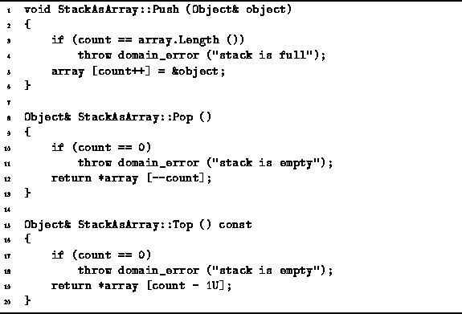

Data Structures and Algorithms
with Object-Oriented Design Patterns in C++
Data Structures and Algorithms
with Object-Oriented Design Patterns in C++
Program  defines the
Push, Pop, and Top,
member functions of the StackAsArray class.
The first of these, Push,
adds an element to the stack.
It takes as its lone argument a reference to the Object
to be pushed onto the stack.
defines the
Push, Pop, and Top,
member functions of the StackAsArray class.
The first of these, Push,
adds an element to the stack.
It takes as its lone argument a reference to the Object
to be pushed onto the stack.

Program: StackAsArray Class Push, Pop, and Top Member Function Definitions
The Push function first checks to see if there is room left in the stack. If no room is left, it throws a domainerror exception. Otherwise, it simply puts a pointer to the object into the array, and then increases the count variable by one. In a correctly functioning program, stack overflow should not occur. If we assume that overflow does not occur, the running time of the Push function is clearly O(1).
The Pop function removes an item from the stack and returns a reference to that item. If the stack is the owner of its contained objects, then when an item is removed from the stack, that item ceases to be owned by the stack. Consequently, the Pop function never invokes operator delete. The Pop function first checks if the stack is empty. If the stack is empty, it throws a domainerror exception. Otherwise, it simply decreases count by one and returns a reference to the item found at the top of the stack. In a correctly functioning program, stack underflow will not occur normally. The running time of the Pop function is O(1).
Finally, the Top function is a stack accessor
which returns a const reference to the top item in the stack.
The Top function is a const member function
since it does not modify the stack.
In particular, it does not remove the top item from the stack.
The Top function first checks if the stack is empty.
If the stack is empty, it throws a domainerror exception.
Otherwise, it returns a reference to the top item,
which is found at position  in the array.
Assuming stack underflow does not occur normally,
the running time of the Top function is O(1).
in the array.
Assuming stack underflow does not occur normally,
the running time of the Top function is O(1).
 Copyright © 1997 by Bruno R. Preiss, P.Eng. All rights reserved.
Copyright © 1997 by Bruno R. Preiss, P.Eng. All rights reserved.